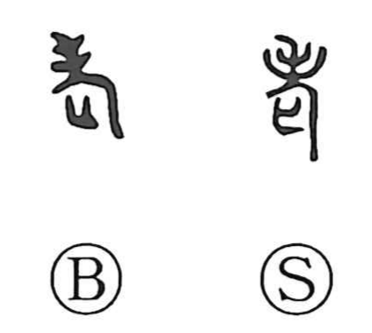

老

Kun: oiru, fukeru, toshiyori | On: rou
old ・ elderly person ・ to grow old
Explanation
The character shows a figure with long hair seen in profile, the hair hanging down as a sign of age, combined with 七, an ancient form depicting a person turned upside down, the image of a body laid out in death. Together they suggest one approaching the end of life: a person grown old. From this comes the senses “to grow old” and “to become decrepit,” and by extension “an elderly person.”